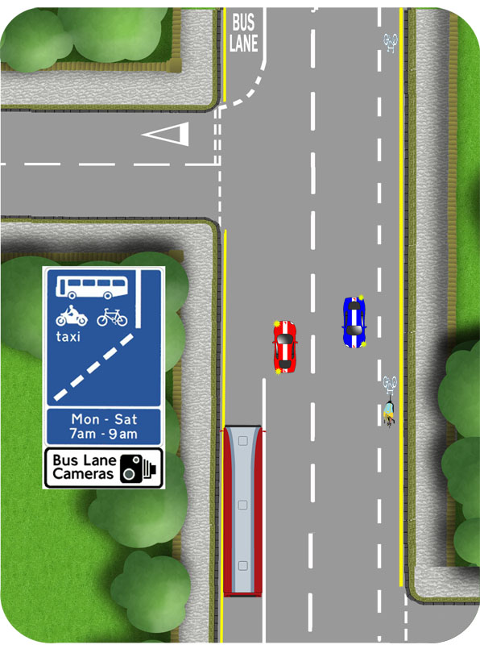

Bus Lanes
Study the blue signs, beside the bus lanes to determine whether or not you are within their hours of operation. If there are no signs, they are permanently active.
If you can, then you should use the bus lane, providing that it is clear and you are likely to make good progress. If a bus is ahead of you, consider whether it is likely to stop.
You must not use the bus lane within its hours of operation.
Be especially careful turning left if you're not allowed to use the bus lane on the approach to the junction. Don’t move over until the solid white line is ended and be very careful of vehicles in the bus lane as they have priority. (This will often include cyclists and some taxis). If necessary, let them pass on your left before turning.

Cycle Lanes
Some cycle lanes have a solid white line. Do not drive or park in them during their hours of operation.
Others have a broken white line. Only drive or park in them if it is unavoidable.
Be very careful turning left. As always, don’t turn left immediately after passing a cyclist. Slow down and turn behind them if necessary.